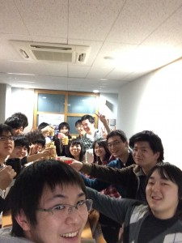

みなさん、知っていますか？
僕ディレクターだったんですよ？笑
4/26-27の2日間アミューあつぎグランドオープニングイベントにて「未来のゲームセンター」という、神奈川工科大学の学生によって制作されたユニークなゲームを展示するイベントを行っていました。

【詳細はこちら】未来のゲームセンター
そのディレクターという大役を今回させていただきました。
厚木市産業振興課からMangageneratorの展示を依頼されたのがきっかけです。
ここまで、大変な仕事になるとは思ってもいなかったですが、多くのことを学び多くの人と関わりました。
ここに、その記録を残しますがこれは記憶に残るイベントでした(｀・ω・´)ｷﾘｯ 笑
僕の当初の人数的な目標は2日間で「600人」
だがそれは1日目の13時の時点では越していました。
結果として「2572人」！4倍以上です！これは感激です！感無量です！
アミューあつぎに伝説を残してきたのではないでしょうか！
受付にいて、会場をあとにするお客さんが「楽しかったねぇ～」「神奈川工科大学の学生はこんなこともやってるんだね」という声を聞いて、とても嬉しい気持ちになりました。
そして白井先生が動画を作成してくれました。こちらを見てください！

これは、大学まで撤収作業に来てくれた人たちとしたおつかれちゃんパーティの写真です。
見てくださいこの笑顔！いろいろと至らない点があり、ミスや混乱を招いてしまた僕でしたがこんな笑顔に囲まれたらもう。。。ｳﾙｯ
来てくださったお客さん、サポートしてくれたみなさん、展示をしてくれた有志たち。
本当にありがとう！
このイベントを通して学んだことは「上下関係と信頼関係」というものが大きいです。
これまで全く関わっていなかった人たちとの、関係を築くのは難かったです。そして、それがディレクターとしての仕事に密接に関連していて、なかなか情報共有ができなかったり、自分のミスによって与える参加者への影響や印象が大きく変わってしまうということを学びました。
どんなに頑張ろうとも、他人がそれを見ているかどうかなんてわからないし、信頼関係を築いていないと頼られることも少なく、そして溝ができてしまう。ディレクターをする上ではやはり、かなりの知識と技術が必要で、それもなく信頼関係がないとなると上下関係も築くのはむずかしい。そんなことを大きく学びました。今後の活動、就職、仕事に大きな影響を受けた、そんなイベントでした。
そして、就職活動。

多くの大学生が就活就活と言っているが、果たしてどこをどう捉えて就活なのかと思うことがあります。「就活」というのは会社にエントリーして会社説明会に行って、テストを受けて、面接を受けて・・・多くの大学生が行う「就活」。果たしてそれだけが「就活」なのだろうか。
就職するために行う活動。つまり、いかにして自分がその企業にとって有益な存在なのかをアピールすること。そして、そのアピールをするために勉強すること。勉強といっても、ただ技術を学ぶだけではなくそれを発信するための勉強も必要である、と僕はそう思っています。
そういうものを積み上げてからの、試験や面接でないと、企業の方には見抜かれてしまうと思うし、本来の姿を評価されてこそ嬉しい。僕の周りでも、経験値の高い人は既に内定をもらっている。
僕は今回のこのイベントを行ったことにより、自分のことをアピールすることができると思います。また、この半年でいくつかのイベントやプロジェクトにも参加し、経験値を稼いぎました。
自分の中でも「勝負」できると思ってきました。決してうぬぼれているわけではありません。
反省点も多いですが、小川耕作の就活これより「本編」に入ります！
早いうちに内定をもらえるように頑張ります！
ですます・であるが混在しているがそれは眠いから仕方ないという「甘え」をあえて明日反省しよう。笑
とりあえず今日は、本当にお疲れ様でした！
ありがとうございます！


{kind=link}
{kind=link}
{kind=link}